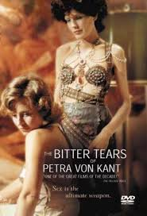
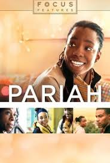
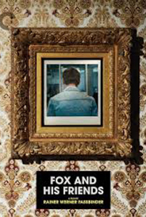

Feature Films with Queer Content
|
 |
1. The Bitter Tears of Petra Von Kant
A fashion designer who treats her personal assistant like a slave falls in love with a woman who does not love her in return. |
|
 |
2. Pariah
Alike is a 17-year-old African-American woman who lives with her parents and younger sister in Brooklyn's Fort Greene neighborhood. She has a flair for poetry, and is a good student at her local high school. Alike is quietly but firmly embracing her identity as a lesbian. At home, her parents' marriage is strained and there is further tension in the household whenever Alike's development becomes a topic of discussion. Wondering how much she can confide in her family, Alike strives to get through adolescence with grace, humor, and tenacity - sometimes succeeding, sometimes not, but always moving forward. |

|
3. The Watermelon Woman
The wry, incisive debut feature by Cheryl Dunye gave cinema something bracingly new and groundbreaking: a vibrant representation of Black lesbian identity by a Black lesbian filmmaker. Dunye stars as Cheryl, a video-store clerk and aspiring director whose interest in forgotten Black actresses leads her to investigate an obscure 1930s performer known as the Watermelon Woman, whose story proves to have surprising resonances with Cheryl's own life as she navigates a new relationship. |

|
4. But I'm a Cheerleader
When her parents suspect that she's a lesbian, a high-school student (Natasha Lyonne) is sent to a sexual-rehabilitation camp. |
|
 |
5. Fox and His Friends
Fassbinder directs and stars as a gay lower-class carnival performer known as Fox the Talking Head, who strikes it rich by winning a lottery. Then he has an ill-fated romance with an elegant upperclass lover. |